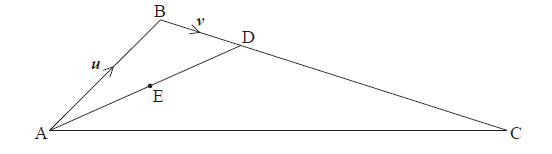

SL Paper 1
In the following diagram, \(\boldsymbol{u} = \overrightarrow {{\rm{AB}}} \) and \(\boldsymbol{v} = \overrightarrow {{\rm{BD}}} \) .

The midpoint of \(\overrightarrow {{\rm{AD}}} \) is E and \(\frac{{{\rm{BD}}}}{{{\rm{DC}}}} = \frac{1}{3}\) .
Express each of the following vectors in terms of \(\boldsymbol{u}\) and \(\boldsymbol{v}\) .
\(\overrightarrow {{\rm{AE}}} \)
\(\overrightarrow {{\rm{EC}}} \)
Let u \( = - 3\)i \( + \) j \( + \) k and v \( = m\)j \( + {\text{ }}n\)k , where \(m,{\text{ }}n \in \mathbb{R}\). Given that v is a unit vector perpendicular to u, find the possible values of \(m\) and of \(n\).
The vectors a = \(\left( {\begin{array}{*{20}{c}} 4 \\ 2 \end{array}} \right)\) and b = \(\left( {\begin{array}{*{20}{c}} {k + 3} \\ k \end{array}} \right)\) are perpendicular to each other.
Find the value of \(k\).
Given that c = a + 2b, find c.
Note: In this question, distance is in metres and time is in seconds.
Two particles \({P_1}\) and \({P_2}\) start moving from a point A at the same time, along different straight lines.
After \(t\) seconds, the position of \({P_1}\) is given by r = \(\left( {\begin{array}{*{20}{c}} 4 \\ { - 1} \\ 3 \end{array}} \right) + t\left( {\begin{array}{*{20}{c}} 1 \\ 2 \\ { - 1} \end{array}} \right)\).
Two seconds after leaving A, \({P_1}\) is at point B.
Two seconds after leaving A, \({P_2}\) is at point C, where \(\overrightarrow {{\text{AC}}} = \left( {\begin{array}{*{20}{c}} 3 \\ 0 \\ 4 \end{array}} \right)\).
Find the coordinates of A.
Find \(\overrightarrow {{\text{AB}}} \);
Find \(\left| {\overrightarrow {{\text{AB}}} } \right|\).
Find \(\cos {\rm{B\hat AC}}\).
Hence or otherwise, find the distance between \({P_1}\) and \({P_2}\) two seconds after they leave A.
The following diagram shows quadrilateral ABCD, with \(\overrightarrow {{\rm{AD}}} = \overrightarrow {{\rm{BC}}} \) , \(\overrightarrow {{\rm{AB}}} = \left( \begin{array}{l}
3\\
1
\end{array} \right)\) , and \(\overrightarrow {{\rm{AC}}} = \left( \begin{array}{l}
4\\
4
\end{array} \right)\) .

Find \(\overrightarrow {{\rm{BC}}} \) .
Show that \(\overrightarrow {{\rm{BD}}} = \left( {\begin{array}{*{20}{c}}
{ - 2}\\
2
\end{array}} \right)\) .
Show that vectors \(\overrightarrow {{\rm{BD}}} \) and \(\overrightarrow {{\rm{AC}}} \) are perpendicular.
Let \(\mathop {{\text{OA}}}\limits^ \to = \left( \begin{gathered}
2 \hfill \\
1 \hfill \\
3 \hfill \\
\end{gathered} \right)\) and \(\mathop {{\text{AB}}}\limits^ \to = \left( \begin{gathered}
1 \hfill \\
3 \hfill \\
1 \hfill \\
\end{gathered} \right)\), where O is the origin. L1 is the line that passes through A and B.
Find a vector equation for L1.
The vector \(\left( \begin{gathered}
2 \hfill \\
p \hfill \\
0 \hfill \\
\end{gathered} \right)\) is perpendicular to \(\mathop {{\text{AB}}}\limits^ \to \). Find the value of p.
A line \(L\) passes through points \({\text{A}}( - 2,{\text{ }}4,{\text{ }}3)\) and \({\text{B}}( - 1,{\text{ }}3,{\text{ }}1)\).
(i) Show that \(\overrightarrow {{\text{AB}}} = \left( {\begin{array}{*{20}{c}} 1 \\ { - 1} \\ { - 2} \end{array}} \right)\).
(ii) Find \(\left| {\overrightarrow {{\text{AB}}} } \right|\).
Find a vector equation for \(L\).
The following diagram shows the line \(L\) and the origin \(O\). The point \(C\) also lies on \(L\).

Point \(C\) has position vector \(\left( {\begin{array}{*{20}{c}} 0 \\ y \\ { - 1} \end{array}} \right)\).
Show that \(y = 2\).
(i) Find \(\overrightarrow {{\text{OC}}} \bullet \overrightarrow {{\text{AB}}} \).
(ii) Hence, write down the size of the angle between \(C\) and \(L\).
Hence or otherwise, find the area of triangle \(OAB\).
Let \(\overrightarrow {{\rm{AB}}} = \left( {\begin{array}{*{20}{c}}
6\\
{ - 2}\\
3
\end{array}} \right)\) and \(\overrightarrow {{\rm{AC}}} = \left( {\begin{array}{*{20}{c}}
{ - 2}\\
{ - 3}\\
2
\end{array}} \right)\) .
Find \(\overrightarrow {{\rm{BC}}} \) .
Find a unit vector in the direction of \(\overrightarrow {{\rm{AB}}} \) .
Show that \(\overrightarrow {{\rm{AB}}} \) is perpendicular to \(\overrightarrow {{\rm{AC}}} \) .
Consider points A(\(1\), \( - 2\), \( -1\)) , B(\(7\), \( - 4\), \(3\)) and C(\(1\), \( -2\), \(3\)) . The line \({L_1}\) passes through C and is parallel to \(\overrightarrow {{\rm{AB}}} \) .
A second line, \({L_2}\) , is given by \(\boldsymbol{r} = \left( {\begin{array}{*{20}{c}}
{ - 1}\\
2\\
{15}
\end{array}} \right) + s\left( {\begin{array}{*{20}{c}}
3\\
{ - 3}\\
p
\end{array}} \right)\) .
Find \(\overrightarrow {{\rm{AB}}} \) .
Hence, write down a vector equation for \({L_1}\) .
Given that \({L_1}\) is perpendicular to \({L_2}\) , show that \(p = - 6\) .
The line \({L_1}\) intersects the line \({L_2}\) at point Q. Find the \(x\)-coordinate of Q.
A line \({L_1}\) passes through the points \({\text{A}}(0,{\text{ }}1,{\text{ }}8)\) and \({\text{B}}(3,{\text{ }}5,{\text{ }}2)\).
Given that \({L_1}\) and \({L_2}\) are perpendicular, show that \(p = 2\).
Find \(\overrightarrow {AB} \).
Hence, write down a vector equation for \({L_1}\).
A second line \({L_2}\), has equation r = \(\left( {\begin{array}{*{20}{c}} 1 \\ {13} \\ { - 14} \end{array}} \right) + s\left( {\begin{array}{*{20}{c}} p \\ 0 \\ 1 \end{array}} \right)\).
Given that \({L_1}\) and \({L_2}\) are perpendicular, show that \(p = 2\).
The lines \({L_1}\) and \({L_1}\) intersect at \(C(9,{\text{ }}13,{\text{ }}z)\). Find \(z\).
Find a unit vector in the direction of \({L_2}\).
Hence or otherwise, find one point on \({L_2}\) which is \(\sqrt 5 \) units from C.
The diagram shows quadrilateral ABCD with vertices A(1, 0), B(1, 5), C(5, 2) and D(4, −1) .

(i) Show that \(\overrightarrow {{\rm{AC}}} = \left( {\begin{array}{*{20}{c}}
4\\
2
\end{array}} \right)\) .
(ii) Find \(\overrightarrow {{\rm{BD}}} \) .
(iii) Show that \(\overrightarrow {{\rm{AC}}} \) is perpendicular to \(\overrightarrow {{\rm{BD}}} \) .
The line (AC) has equation \({\boldsymbol{r}} = {\boldsymbol{u}} + s{\boldsymbol{v}}\) .
(i) Write down vector u and vector v .
(ii) Find a vector equation for the line (BD).
The lines (AC) and (BD) intersect at the point \({\text{P}}(3{\text{, }}k)\) .
Show that \(k = 1\) .
The lines (AC) and (BD) intersect at the point \({\text{P}}(3{\text{, }}k)\) .
Hence find the area of triangle ACD.
The line \({L_1}\) passes through the points \(\rm{A}(2, 1, 4)\) and \(\rm{B}(1, 1, 5)\).
Another line \({L_2}\) has equation r = \(\left( \begin{array}{c}4\\7\\ - 4\end{array} \right) + s\left( \begin{array}{c}0\\ - 1\\1\end{array} \right)\) . The lines \({L_1}\) and \({L_2}\) intersect at the point P.
Show that \(\overrightarrow {{\text{AB}}} = \) \(\left( \begin{array}{c} - 1\\0\\1\end{array} \right)\)
Hence, write down a direction vector for \({L_1}\);
Hence, write down a vector equation for \({L_1}\).
Find the coordinates of P.
Write down a direction vector for \({L_2}\).
Hence, find the angle between \({L_1}\) and \({L_2}\).
Consider the points A (1 , 5 , 4) , B (3 , 1 , 2) and D (3 , k , 2) , with (AD) perpendicular to (AB) .
The point O has coordinates (0 , 0 , 0) , point A has coordinates (1 , – 2 , 3) and point B has coordinates (– 3 , 4 , 2) .
Find
(i) \(\overrightarrow {{\rm{AB}}} \) ;
(ii) \(\overrightarrow {{\rm{AD}}} \) giving your answer in terms of k .
[3 marks]
Show that \(k = 7\) .
The point C is such that \(\overrightarrow {{\rm{BC}}} = \frac{1}{2}\overrightarrow {{\rm{AD}}} \) .
Find the position vector of C.
Find \(\cos {\rm{A}}\widehat {\rm{B}}{\rm{C}}\) .
A line \({L_1}\) passes through the points \({\text{A}}(0,{\text{ }} - 3,{\text{ }}1)\) and \({\text{B}}( - 2,{\text{ }}5,{\text{ }}3)\).
(i) Show that \(\overrightarrow {{\text{AB}}} = \left( {\begin{array}{*{20}{c}} { - 2} \\ 8 \\ 2 \end{array}} \right)\).
(ii) Write down a vector equation for \({L_1}\).
A line \({L_2}\) has equation \({\mathbf{r}} = \left( {\begin{array}{*{20}{c}} { - 1} \\ 7 \\ { - 4} \end{array}} \right) + s\left( {\begin{array}{*{20}{c}} 0 \\ 1 \\ { - 1} \end{array}} \right)\). The lines \({L_1}\) and \({L_2}\) intersect at a point \(C\).
Show that the coordinates of \(C\) are \(( - 1,{\text{ }}1,{\text{ }}2)\).
A point \(D\) lies on line \({L_2}\) so that \(\left| {\overrightarrow {{\text{CD}}} } \right| = \sqrt {18} \) and \(\overrightarrow {{\text{CA}}} \bullet \overrightarrow {{\text{CD}}} = - 9\). Find \({\rm{A\hat CD}}\).
Let \(\overrightarrow {{\text{OA}}} = \left( {\begin{array}{*{20}{c}} { - 1} \\ 0 \\ 4 \end{array}} \right)\) and \(\overrightarrow {{\text{OB}}} = \left( {\begin{array}{*{20}{c}} 4 \\ 1 \\ 3 \end{array}} \right)\).
The point C is such that \(\overrightarrow {{\text{AC}}} = \left( {\begin{array}{*{20}{c}} { - 1} \\ 1 \\ { - 1} \end{array}} \right)\).
The following diagram shows triangle ABC. Let D be a point on [BC], with acute angle \({\text{ADC}} = \theta \).

(i) Find \(\overrightarrow {{\text{AB}}} \).
(ii) Find \(\left| {\overrightarrow {{\text{AB}}} } \right|\).
Show that the coordinates of C are \(( - 2,{\text{ }}1,{\text{ }}3)\).
Write down an expression in terms of \(\theta \) for
(i) angle ADB;
(ii) area of triangle ABD.
Given that \(\frac{{{\text{area }}\Delta {\text{ABD}}}}{{{\text{area }}\Delta {\text{ACD}}}} = 3\), show that \(\frac{{{\text{BD}}}}{{{\text{BC}}}} = \frac{3}{4}\).
Hence or otherwise, find the coordinates of point D.
A line \({L_1}\) passes though points P(−1, 6, −1) and Q(0, 4, 1) .
A second line \({L_2}\) has equation \(r = \left( {\begin{array}{*{20}{c}}
4\\
2\\
{ - 1}
\end{array}} \right) + s\left( {\begin{array}{*{20}{c}}
3\\
0\\
{ - 4}
\end{array}} \right)\) .
(i) Show that \(\overrightarrow {{\rm{PQ}}} = \left( {\begin{array}{*{20}{c}}
1\\
{ - 2}\\
2
\end{array}} \right)\) .
(ii) Hence, write down an equation for \({L_1}\) in the form \({\boldsymbol{r}} = {\boldsymbol{a}} + t{\boldsymbol{b}}\) .
Find the cosine of the angle between \(\overrightarrow {{\rm{PQ}}} \) and \({L_2}\) .
The lines \({L_1}\) and \({L_2}\) intersect at the point R. Find the coordinates of R.
The line \({L_1}\) is parallel to the z-axis. The point P has position vector \(\left( {\begin{array}{*{20}{c}}
8\\
1\\
0
\end{array}} \right)\) and lies on \({L_1}\).
Write down the equation of \({L_1}\) in the form \({\boldsymbol{r}} = {\boldsymbol{a}} + t{\boldsymbol{b}}\).
The line \({L_2}\) has equation \({\boldsymbol{r}} = \left( {\begin{array}{*{20}{c}}
2\\
4\\
{ - 1}
\end{array}} \right) + s\left( {\begin{array}{*{20}{c}}
2\\
{ - 1}\\
5
\end{array}} \right)\) . The point A has position vector \(\left( {\begin{array}{*{20}{c}}
6\\
2\\
9
\end{array}} \right)\) .
Show that A lies on \({L_2}\) .
Let B be the point of intersection of lines \({L_1}\) and \({L_2}\) .
(i) Show that \(\overrightarrow {{\rm{OB}}} = \left( {\begin{array}{*{20}{c}}
8\\
1\\
{14}
\end{array}} \right)\) .
(ii) Find \(\overrightarrow {{\rm{AB}}} \) .
The point C is at (2, 1, − 4). Let D be the point such that ABCD is a parallelogram.
Find \(\overrightarrow {{\rm{OD}}} \) .
Consider the vectors \(\boldsymbol{a} = \left( {\begin{array}{*{20}{c}}
2\\
{ - 3}
\end{array}} \right)\) and \(\boldsymbol{b} = \left( {\begin{array}{*{20}{c}}
1\\
4
\end{array}} \right)\) .
Let \(2\boldsymbol{a} + \boldsymbol{b} + \boldsymbol{c} = 0\) , where \(0\) is the zero vector.
(a) Find
(i) \(2\boldsymbol{a} + \boldsymbol{b}\) ;
(ii) \(\left| {2\boldsymbol{a} + \boldsymbol{b}} \right|\) .
Let \(2\boldsymbol{a} + \boldsymbol{b} + \boldsymbol{c} = 0\) , where \(0\) is the zero vector.
(b) Find \(\boldsymbol{c}\) .
Find
(i) \(2\boldsymbol{a} + \boldsymbol{b}\) ;
(ii) \(\left| {2\boldsymbol{a} + \boldsymbol{b}} \right|\) .
Find \(\boldsymbol{c}\) .
The vertices of the triangle PQR are defined by the position vectors
\(\overrightarrow {{\rm{OP}}} = \left( {\begin{array}{*{20}{c}}
4\\
{ - 3}\\
1
\end{array}} \right)\) , \(\overrightarrow {{\rm{OQ}}} = \left( {\begin{array}{*{20}{c}}
3\\
{ - 1}\\
2
\end{array}} \right)\) and \(\overrightarrow {{\rm{OR}}} = \left( {\begin{array}{*{20}{c}}
6\\
{ - 1}\\
5
\end{array}} \right)\) .
Find
(i) \(\overrightarrow {{\rm{PQ}}} \) ;
(ii) \(\overrightarrow {{\rm{PR}}} \) .
Show that \(\cos {\rm{R}}\widehat {\rm{P}}{\rm{Q}} = \frac{1}{2}\) .
(i) Find \({\rm{sinR}}\widehat {\rm{P}}{\rm{Q}}\) .
(ii) Hence, find the area of triangle PQR, giving your answer in the form \(a\sqrt 3 \) .
Let A and B be points such that \(\overrightarrow {{\rm{OA}}} = \left( {\begin{array}{*{20}{c}}
5\\
2\\
1
\end{array}} \right)\) and \(\overrightarrow {{\rm{OB}}} = \left( {\begin{array}{*{20}{c}}
6\\
0\\
3
\end{array}} \right)\) .
Show that \(\overrightarrow {{\rm{AB}}} = \left( {\begin{array}{*{20}{c}}
1\\
{ - 2}\\
2
\end{array}} \right)\) .
Let C and D be points such that ABCD is a rectangle.
Given that \(\overrightarrow {{\rm{AD}}} = \left( {\begin{array}{*{20}{c}}
4\\
p\\
1
\end{array}} \right)\) , show that \(p = 3\) .
Let C and D be points such that ABCD is a rectangle.
Find the coordinates of point C.
Let C and D be points such that ABCD is a rectangle.
Find the area of rectangle ABCD.
Distances in this question are in metres.
Ryan and Jack have model airplanes, which take off from level ground. Jack’s airplane takes off after Ryan’s.
The position of Ryan’s airplane \(t\) seconds after it takes off is given by \(\boldsymbol{r}=\left( \begin{array}{c}5\\6\\0\end{array} \right) + t\left( \begin{array}{c} - 4\\2\\4\end{array} \right)\).
Find the speed of Ryan’s airplane.
Find the height of Ryan’s airplane after two seconds.
The position of Jack’s airplane \(s\) seconds after it takes off is given by r = \(\left( \begin{array}{c} - 39\\44\\0\end{array} \right) + s\left( \begin{array}{c}4\\ - 6\\7\end{array} \right)\).
Show that the paths of the airplanes are perpendicular.
The two airplanes collide at the point \((-23, 20, 28)\).
How long after Ryan’s airplane takes off does Jack’s airplane take off?
The line \({L_1}\) passes through the points P(2, 4, 8) and Q(4, 5, 4) .
The line \({L_2}\) is perpendicular to \({L_1}\) , and parallel to \(\left( {\begin{array}{*{20}{c}}
{3p}\\
{2p}\\
4
\end{array}} \right)\) , where \(p \in \mathbb{Z}\) .
(i) Find \(\overrightarrow {{\rm{PQ}}} \) .
(ii) Hence write down a vector equation for \({L_1}\) in the form \({\boldsymbol{r}} = {\boldsymbol{a}} + s{\boldsymbol{b}}\) .
(i) Find the value of p .
(ii) Given that \({L_2}\) passes through \({\text{R}}(10{\text{, }}6{\text{, }}- 40)\) , write down a vector equation for \({L_2}\) .
The lines \({L_1}\) and \({L_2}\) intersect at the point A. Find the x-coordinate of A.
A line \(L\) passes through points \({\text{A}}( - 3,{\text{ }}4,{\text{ }}2)\) and \({\text{B}}( - 1,{\text{ }}3,{\text{ }}3)\).
The line \(L\) also passes through the point \({\text{C}}(3,{\text{ }}1,{\text{ }}p)\).
Show that \(\overrightarrow {{\text{AB}}} = \left( {\begin{array}{*{20}{c}} 2 \\ { - 1} \\ 1 \end{array}} \right)\).
Find a vector equation for \(L\).
Find the value of \(p\).
The point D has coordinates \(({q^2},{\text{ }}0,{\text{ }}q)\). Given that \(\overrightarrow {{\text{DC}}} \) is perpendicular to \(L\), find the possible values of \(q\).
The line \(L\) is parallel to the vector \(\left( \begin{array}{l}3\\2\end{array} \right)\).
The line \(L\) passes through the point \((9, 4)\).
Find the gradient of the line \(L\).
Find the equation of the line \(L\) in the form \(y = ax + b\).
Write down a vector equation for the line \(L\).
The following diagram shows the obtuse-angled triangle ABC such that \(\overrightarrow {{\rm{AB}}} = \left( {\begin{array}{*{20}{c}}
{ - 3}\\
0\\
{ - 4}
\end{array}} \right)\) and \(\overrightarrow {{\rm{AC}}} = \left( {\begin{array}{*{20}{c}}
{ - 2}\\
2\\
{ - 6}
\end{array}} \right)\) .

(i) Write down \(\overrightarrow {{\rm{BA}}} \) .
(ii) Find \(\overrightarrow {{\rm{BC}}} \) .
(i) Find \(\cos {\rm{A}}\widehat {\rm{B}}{\rm{C}}\) .
(ii) Hence, find \({\rm{sinA}}\widehat {\rm{B}}{\rm{C}}\) .
The point D is such that \(\overrightarrow {{\rm{CD}}} = \left( {\begin{array}{*{20}{c}}
{ - 4}\\
5\\
p
\end{array}} \right)\) , where \(p > 0\) .
(i) Given that \(\overrightarrow {|{\rm{CD}}|} = \sqrt {50} \) , show that \(p = 3\) .
(ii) Hence, show that \(\overrightarrow {{\rm{CD}}} \) is perpendicular to \(\overrightarrow {{\rm{BC}}} \) .
The line L passes through the point \((5, - 4,10)\) and is parallel to the vector \(\left( {\begin{array}{*{20}{c}}
4\\
{ - 2}\\
5
\end{array}} \right)\) .
Write down a vector equation for line L .
The line L intersects the x-axis at the point P. Find the x-coordinate of P.
A particle is moving with a constant velocity along line L . Its initial position is A(6 , −2 , 10) . After one second the particle has moved to B( 9, −6 , 15) .
(i) Find the velocity vector, \(\overrightarrow {{\rm{AB}}} \) .
(ii) Find the speed of the particle.
Write down an equation of the line L .
The line \({L_1}\) is represented by the vector equation \({\boldsymbol{r}} = \left( {\begin{array}{*{20}{c}}
{ - 3}\\
{ - 1}\\
{ - 25}
\end{array}} \right) + p\left( {\begin{array}{*{20}{c}}
2\\
1\\
{ - 8}
\end{array}} \right)\) .
A second line \({L_2}\) is parallel to \({L_1}\) and passes through the point B(\( - 8\), \( - 5\), \(25\)) .
Write down a vector equation for \({L_2}\) in the form \({\boldsymbol{r}} = {\boldsymbol{a}} + t{\boldsymbol{b}}\) .
A third line \({L_3}\) is perpendicular to \({L_1}\) and is represented by \({\boldsymbol{r}} = \left( {\begin{array}{*{20}{c}}
5\\
0\\
3
\end{array}} \right) + q\left( {\begin{array}{*{20}{c}}
{ - 7}\\
{ - 2}\\
k
\end{array}} \right)\) .
Show that \(k = - 2\) .
The lines \({L_1}\) and \({L_3}\) intersect at the point A.
Find the coordinates of A.
The lines \({L_2}\)and \({L_3}\)intersect at point C where \(\overrightarrow {{\rm{BC}}} = \left( {\begin{array}{*{20}{c}}
6\\
3\\
{ - 24}
\end{array}} \right)\) .
(i) Find \(\overrightarrow {{\rm{AB}}} \) .
(ii) Hence, find \(|\overrightarrow {{\rm{AC}}} |\) .
The position vectors of points P and Q are i \( + \) 2 j \( - \) k and 7i \( + \) 3j \( - \) 4k respectively.
Find a vector equation of the line that passes through P and Q.
The line through P and Q is perpendicular to the vector 2i \( + \) nk. Find the value of \(n\).
A line L passes through \({\text{A}}(1{\text{, }} - 1{\text{, }}2)\) and is parallel to the line \({\boldsymbol{r}} = \left( {\begin{array}{*{20}{c}}
{ - 2}\\
1\\
5
\end{array}} \right) + s\left( {\begin{array}{*{20}{c}}
1\\
3\\
{ - 2}
\end{array}} \right)\) .
The line L passes through point P when \(t = 2\) .
Write down a vector equation for L in the form \({\boldsymbol{r}} = {\boldsymbol{a}} + t{\boldsymbol{b}}\) .
Find
(i) \(\overrightarrow {{\rm{OP}}} \) ;
(ii) \(|\overrightarrow {{\rm{OP}}} |\) .
Let \({L_x}\) be a family of lines with equation given by \(r\) \( = \left( {\begin{array}{*{20}{c}} x \\ {\frac{2}{x}} \end{array}} \right) + t\left( {\begin{array}{*{20}{c}} {{x^2}} \\ { - 2} \end{array}} \right)\), where \(x > 0\).
Write down the equation of \({L_1}\).
A line \({L_a}\) crosses the \(y\)-axis at a point \(P\).
Show that \(P\) has coordinates \(\left( {0,{\text{ }}\frac{4}{a}} \right)\).
The line \({L_a}\) crosses the \(x\)-axis at \({\text{Q}}(2a,{\text{ }}0)\). Let \(d = {\text{P}}{{\text{Q}}^2}\).
Show that \(d = 4{a^2} + \frac{{16}}{{{a^2}}}\).
There is a minimum value for \(d\). Find the value of \(a\) that gives this minimum value.
The following diagram shows triangle \(ABC\).

Let \(\overrightarrow {{\text{AB}}} \bullet \overrightarrow {{\text{AC}}} = - 5\sqrt 3 \) and \(\left| {\overrightarrow {{\text{AB}}} } \right|\left| {\overrightarrow {{\text{AC}}} } \right| = 10\). Find the area of triangle \(ABC\).
Let u \( = \left( {\begin{array}{*{20}{c}}
2\\
3\\
{ - 1}
\end{array}} \right)\) and w \( = \left( {\begin{array}{*{20}{c}}
3\\
{ - 1}\\
p
\end{array}} \right)\) . Given that u is perpendicular to w , find the value of p .
Let \({\boldsymbol{v}} = \left( {\begin{array}{*{20}{c}}
1 \\
q \\
5
\end{array}} \right)\) . Given that \(\left| {\boldsymbol{v}} \right| = \sqrt {42} \), find the possible values of \(q\) .
Find the cosine of the angle between the two vectors \(3{\boldsymbol{i}} + 4{\boldsymbol{j}} + 5{\boldsymbol{k}}\) and \(4{\boldsymbol{i}} - 5{\boldsymbol{j}} - 3{\boldsymbol{k}}\) .
Six equilateral triangles, each with side length 3 cm, are arranged to form a hexagon.
This is shown in the following diagram.
![]()
The vectors p , q and r are shown on the diagram.
Find p•(p + q + r).
In the following diagram, \(\overrightarrow {{\text{OP}}} \) = p, \(\overrightarrow {{\text{OQ}}} \) = q and \(\overrightarrow {{\text{PT}}} = \frac{1}{2}\overrightarrow {{\text{PQ}}} \).

Express each of the following vectors in terms of p and q,
\(\overrightarrow {{\text{QP}}} \);
\(\overrightarrow {{\text{OT}}} \).
Point A has coordinates (−4, −12, 1) and point B has coordinates (2, −4, −4).
The line L passes through A and B.
Show that \(\mathop {{\text{AB}}}\limits^ \to = \left( \begin{gathered}
\,6 \hfill \\
\,8 \hfill \\
- 5 \hfill \\
\end{gathered} \right)\)
Find a vector equation for L.
Point C (k , 12 , −k) is on L. Show that k = 14.
Find \(\mathop {{\text{OB}}}\limits^ \to \, \bullet \mathop {{\text{AB}}}\limits^ \to \).
Write down the value of angle OBA.
Point D is also on L and has coordinates (8, 4, −9).
Find the area of triangle OCD.